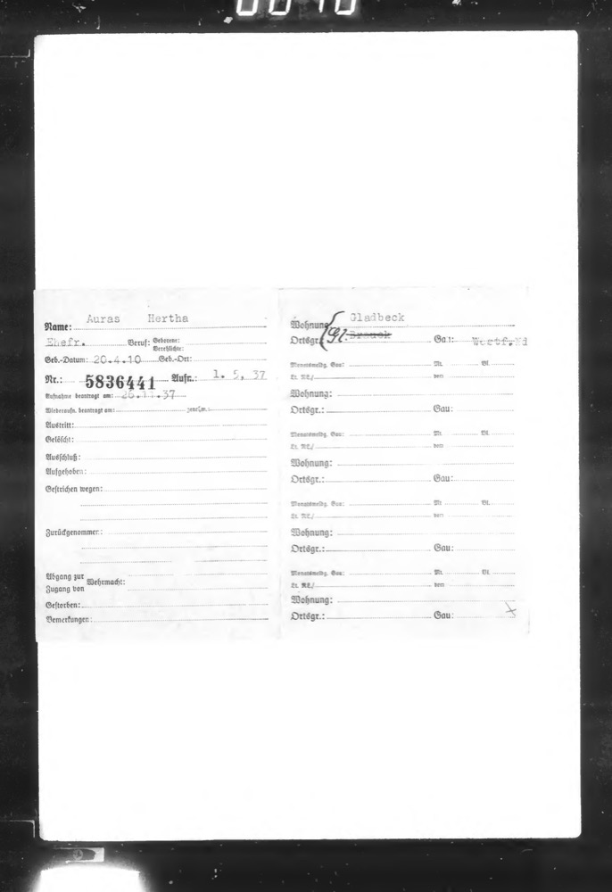
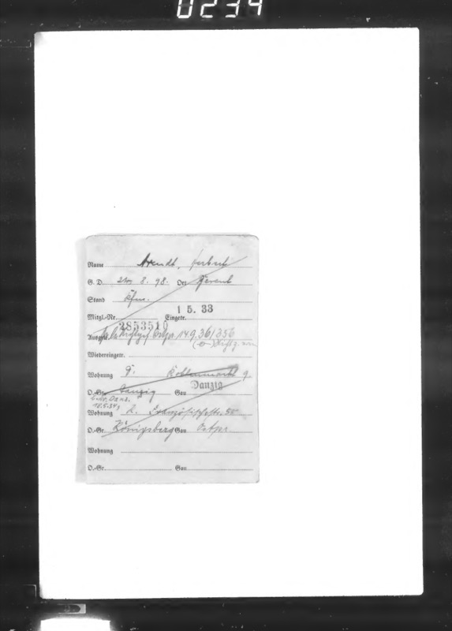
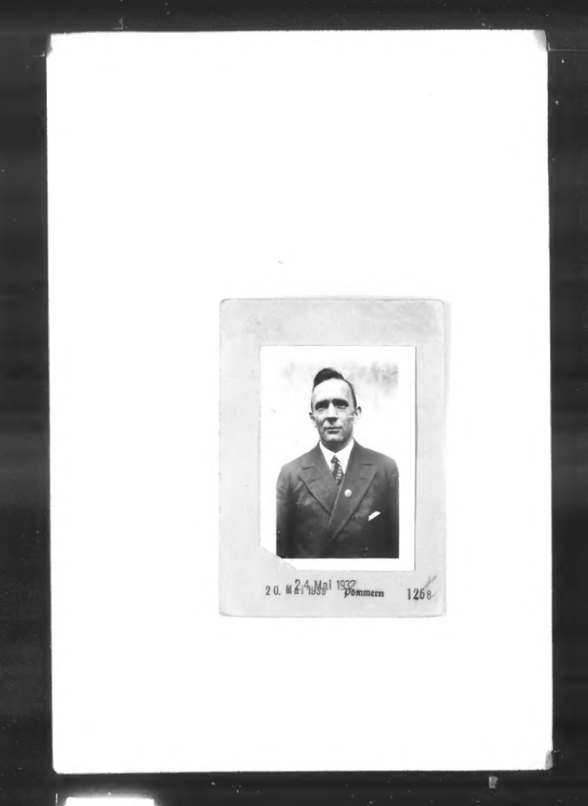
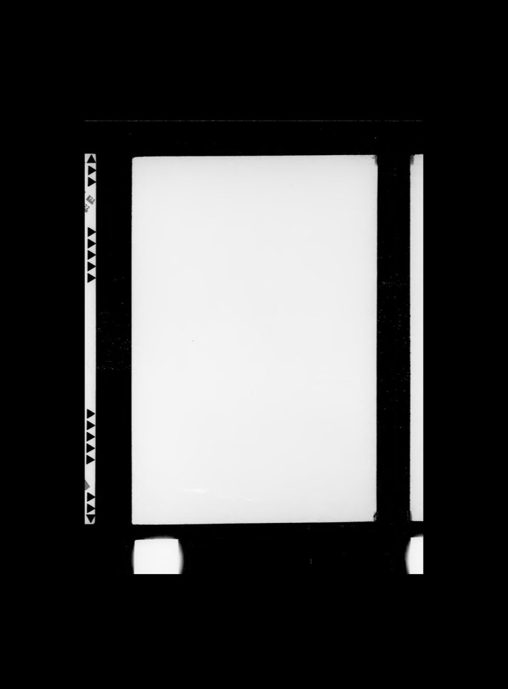

In a recent working paper, I (paper here) reconstruct the membership of the Nazi Party (NSDAP) at the individual level from archival registration cards, link those members to the full-count U.S. Censuses, and trace their émigré descendants forward into modern voter and donation records. Several people have asked either (1) how the digitization actually worked or (2) how they can digitize records for their research, so what follows is a walkthrough of that part of the project, from where the cards come from through to the structured dataset of 3.4 million members I ended up with. As a motivation to continue reading, I note that the process of obtaining all the scanned images and transcribing them proceeded from start to finish in less than a week.
The NSDAP kept two central membership registries at the office of the Reich Treasurer in Munich, the Zentralkartei, an alphabetical master index of roughly 4.3 million cards, and the Ortsgruppenkartei, roughly 6.6 million cards filed by local party chapter. At the end of the war, the registries were captured by U.S. forces and moved to the Berlin Document Center, where they were eventually microfilmed and folded into the U.S. National Archives as Record Group 242, Microfilm Publication A3340. NARA has since digitized the microfilm, and the collection is browsable online at catalog.archives.gov as of earlier this year.
Each card is a pre-printed form filled in by typewriter or by hand, in German. The front of each card records the member's name, date and place of birth, occupation, membership number, date of admission, Gau (the regional party district), Ortsgruppe (the local chapter), and residence, along with administrative fields for transfers, expulsions, military service, and death where relevant. The back of each card, where there is one, has either a photograph of the member or a running list of their address changes. Counting duplicate filings, back cards, blank inserts, and microfilm dividers, the collection comes to about 16.3 million card images. The difference between this count of sixteen million images and the far smaller number of actual members transcribed is important to keep in mind here, because most of the effort goes into deciding what not to transcribe (for cost-saving purposes).




NARA organizes the microfilm publication into 5,442 file units, each a PDF that corresponds to a stretch of microfilm reel, and each file unit has a stable object URL on NARA's S3 bucket. The first script that I ran queries the catalog API for the file units under the parent record, writes out the list of PDF URLs, and downloads them:
def download(url):
name = url.strip().split("/")[-1]
out = OUTPUT_DIR / name
if out.exists() and out.stat().st_size > 1000:
return "skip", name, 0 # resume support
for attempt in range(3):
r = subprocess.run(
["curl", "-s", "-o", str(out), "--max-time", str(TIMEOUT),
"--retry", "2", "--retry-delay", "10", url.strip()],
timeout=TIMEOUT + 60)
if r.returncode == 0 and out.exists() and out.stat().st_size > 1000:
return "ok", name, out.stat().st_size
if out.exists():
out.unlink() # drop partial files
time.sleep(10 * (attempt + 1))
return "fail", name, "max retries"I ran four workers in parallel in batches of fifty. The downloaded PDFs come to several terabytes on their own, which I kept on a local 20 TB external drive.
My first instinct was to render every page to a JPEG and send the images to the model one at a time. A second script thus extracted 200 DPI images from the PDFs with PyMuPDF. It did work, and on a smaller collection it would have been fine. At sixteen million pages, though, it quickly proved wasteful, because rendering everything to disk means keeping a second copy of an already multi-terabyte collection, and one API call per page is many calls. Given the doubtless value of the data, I wanted to digitize it as quickly as I could.
Gemini accepts a PDF as an input directly, which means the whole rendering step can be dropped; rather than turn each PDF into images, I split it into fifty-page chunks and sent the chunk itself as a PDF in a single call, and the model returned a JSON array with one record per page. The cost per page on a PDF input came out essentially the same as for a rendered image, so there was nothing to lose by skipping the render. I arrived at fifty pages per chunk by sending increasingly large chunks of a manually transcribed image sample to Gemini and evaluating the resultant accuracy until I hit a point of diminishing returns, which turned out to be around there. Interestingly, chunks larger than around fifty pages started to drop in accuracy at the tail.
As it turns out, most of the sixteen million pages are not front cards with a member on them. The rest are back cards, blank inserts, microfilm dividers, and duplicate filings. When I was still rendering pages to images, I trained a small image classifier to screen these out before transcription, using Gemini to label a few thousand examples. Once I switched the pipeline to send PDFs directly, I was unable to run the classifier anymore, although devised a prompt schema that achieved the same end goal; I asked the model to tag each page as a front, a back, or blank, and a blank page comes back with empty fields, so the sorting comes out of the transcription itself. With the model's own tag doing the work, the collection shrinks down from 16.3 million raw pages to 6,522,708 actual card images.
The cards are impossible to transcribe naively with traditional OCR: handwriting and typewriting both appear across the collection, the German is set against Fraktur labels on degraded microfilm, and the layout is fixed without being perfectly consistent. The case for handling documents like these with a general-purpose vision-language model rather than OCR is one that I make at length in a separate methods working paper. In summary, I do not transcribe the cards to free text and then parse the text, but instead pass the model the card pages together with a structured list of output variables, and let the API's structured-output mode force the response to match a JSON schema. As I suggest in the working paper, I decided to do this in lieu of free-form transcription with post-processing because it minimized the number of output tokens for this specific use-case, thus reducing the cost.
I used Google's Gemini 3.1 Flash Lite for the full run using the model selection method that I propose in the
same working paper. I transcribed a random sample of pages with the strongest frontier model available to use as
a
reference (Gemini 3.1 Pro), and then scored the cheaper candidates against that reference. At three million
cards the per-card cost is
the binding constraint, and Flash Lite is roughly two orders of magnitude cheaper per token
than a flagship model while still reading these cards well. In fact, it was not only the model that most closely
reproduced (1) the
Gemini 3.1 Pro outputs
The API call is structured as follows. The responseSchema is
an array type, corresponding to one card record per page in the chunk, and responseMimeType
forces valid JSON. mediaResolution is set to high as I have elsewhere advised.
Similarly, thinkingLevel is set to minimal, because reasoning effort does not help
with OCR and on Gemini actively hurts it: the reasoning mode slices the image into strips
and processes them separately, which discards exactly the context that allows a
sufficiently trained vision-language model to perform well at this task in the first place.
payload = {
"contents": [{
"parts": [
{"text": PROMPT},
{"inline_data": {"mime_type": "application/pdf", "data": b64}},
]
}],
"generationConfig": {
"responseMimeType": "application/json",
"responseSchema": ARRAY_SCHEMA, # array of per-page card records
"mediaResolution": "MEDIA_RESOLUTION_HIGH",
"thinkingConfig": {"thinkingLevel": "MINIMAL"},
},
"service_tier": "flex",
}The prompt that I used is as follows:
PROMPT = (
"Extract all data from this NSDAP membership card (Mitgliedskarte). "
"These are microfilmed index cards from the Nazi Party central membership "
"registry, held at NARA (Record Group 242). Cards are pre-printed Fraktur "
"forms with typewritten or handwritten entries in German.\n\n"
"Extract every field visible on the card:\n"
"- name: surname and first name (Name:)\n"
"- occupation: profession/trade (Beruf:)\n"
"- birth_date: date of birth (Geb.-Datum:)\n"
"- birthplace: place of birth (Geb.-Ort:)\n"
"- member_number: NSDAP membership number (Nr.:)\n"
"- admission_date: date of admission (Aufn.:)\n"
"- ortsgruppe: local party chapter (Ortsgr.:)\n"
"- gau: regional party district (Gau:)\n"
" ... [transfers, expulsions, Wehrmacht, death, remarks] ...\n\n"
"Preserve original German spelling exactly. Use null for empty or "
"illegible fields."
)The explicit instruction that I provide for the model to return null on anything empty or
illegible is important for pre-emptively
limiting hallucinations, although I rarely see these with the recent Gemini series (conditional on the image
quality and script). Of the 6.5 million card images, 3,393,350 produced valid name and
membership data. The remainder were mostly back cards and genuinely blank or destroyed
pages, and the losses were spread evenly enough across Gaue, admission years, and
microfilm reels such that they do not systematically bias downstream analyses.
Of course, the validity of three million card transcriptions cannot be checked by hand, and there is no pre-existing transcription to check them against. As I advise in my methods working paper, the best way to validate a large-scale transcription like this is to check for internal consistency, for accuracy against known aggregates, and for logical correlations against external data. The transcriptions ultimately satisfy all three conditions. NSDAP membership numbers were issued sequentially, and in the transcribed data they climb monotonically with the admission year, as they have to if the dates are being read correctly. The occupation distribution the cards recover matches the known sociology of the party, with workers at 29.6 percent of classifiable occupations, close to independent historical estimates. Birthplace and Gau agree on the large majority of cards, and where they diverge, the discrepancy can be traced to domestic migration. The third validation method follows from the linkage to the U.S. Census rather than on the cards alone: for a member correctly matched to someone already recorded in the 1940 Census, the card's admission date has to fall before 1940, since one is unlikely to join a party in Germany after a census has already found them living in America, and among the high-confidence matches that ordering holds almost without exception.
None of those checks needs a human to read a card, but for completeness (owing especially to the political sensitivity of the research question that I ultimately study), I hired an undergraduate research assistant to transcribe by hand a random sample of several hundred cards so that the two could be compared directly. The machine transcription had full coverage and high accuracy on the fields that matter for linking a card to the census, the names and birth dates, and the membership numbers were exactly correct on every card in the sample. The fields that are not used for matching, occupation and residence among them, had relatively lower agreement, partly because German occupational abbreviations and street-address formats vary so much, and partly because the model genuinely misses Gau and Ortsgruppe on a fair share of cards even where a human can read them. The paper reports this whole exercise in more detail.
Comments